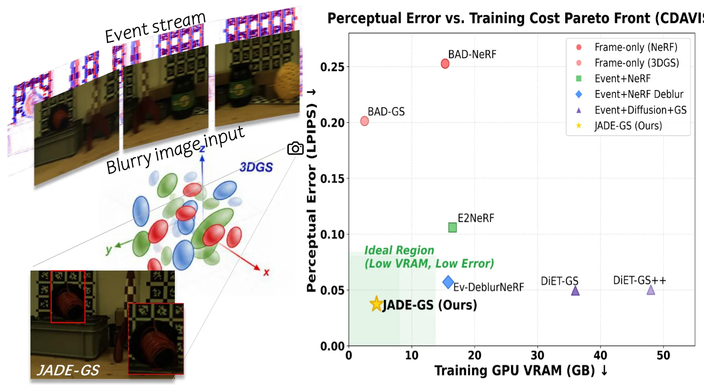
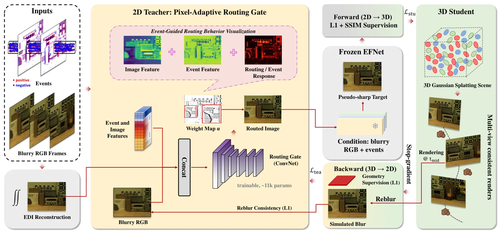
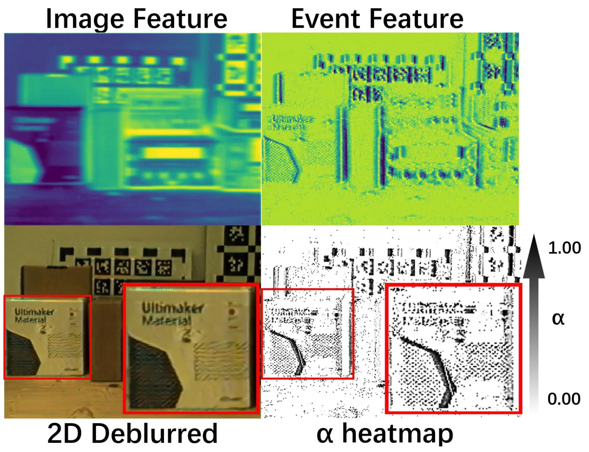
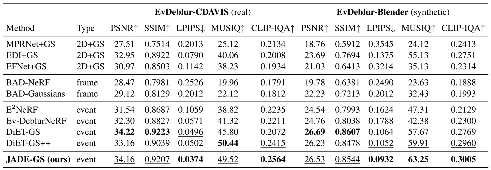
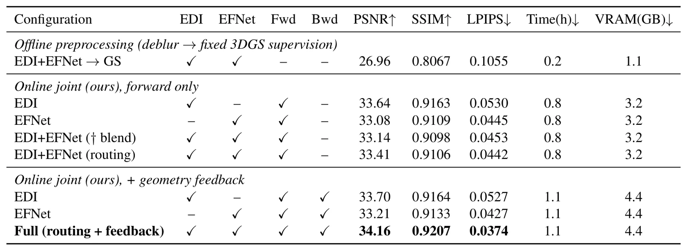

JADE-GS：事件引导的联合交替去模糊 3D Gaussian SplattingJADE-GS: Joint Alternating Deblurring Guided by Events in 3D Gaussian Splatting
事件相机、高速运动和 3DGS 双向优化对机器人重建有价值，资源需求友好；需确认位姿来源、标定敏感性和测量级几何收益。
一句话工作总结
融合事件物理与学习式去模糊先验，并以 3DGS 多视一致性反向约束二维恢复器，减少模糊和伪标签对几何的污染。
摘要
高速运动造成的曝光模糊会破坏三维重建所需的帧内运动信息，而事件相机可以微秒级捕获该信号。JADE-GS 用像素自适应路由门融合两类互补先验：物理事件积分保持边缘但会累积漂移，学习式恢复能补纹理却可能扭曲边界。融合后的二维恢复器与 3DGS 学生模型形成双向循环，利用停止梯度的多视一致渲染和基于物理的再模糊约束反向正则恢复器。方法在合成与真实 benchmark 上取得领先感知质量，单张消费级 GPU 约一小时、低于 5 GB 完成训练并保持实时渲染。
When a camera moves fast during exposure, blur destroys the intra-exposure motion a 3D model needs to recover the sharp scene, while event cameras capture exactly this signal at microsecond resolution. Turning them into reliable 3D supervision faces two obstacles. First, the two restoration priors fail in opposite ways: physics-based event-integration priors preserve edges but accumulate drift; learned networks recover texture but distort boundaries. Second, existing pipelines run in one direction only, so raw event noise or the biases of fixed 2D pseudo-labels pass uncorrected into the geometry. JADE-GS addresses both: a pixel-adaptive routing gate fuses the complementary priors, and the resulting 2D restorer is coupled to a 3D Gaussian Splatting student in a bidirectional loop, where detached, multi-view-consistent renders and a physics-based reblurring constraint regularize the restorer, turning a fixed preprocessor into a geometry-aware predictor. Across synthetic and real benchmarks, JADE-GS attains the best perceptual quality, leading LPIPS and CLIP-IQA on both benchmarks with competitive PSNR and SSIM, and trainsin about one hour under 5 GB on a single consumer GPU while preserving real-time rendering.
中文解读摘录
图表/页面预览
{kind=link}

{kind=link}

{kind=link}

{kind=link}

{kind=link}
